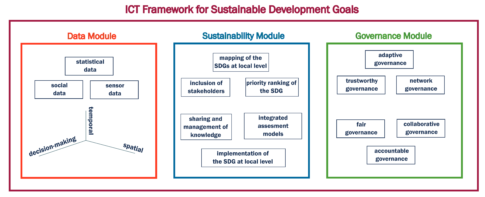
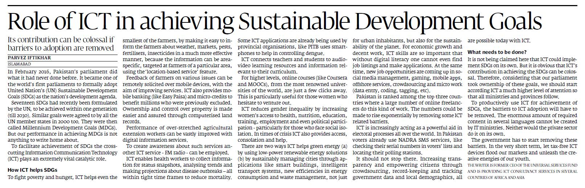

Information and Communication Technologies (ICT) refers to digital technologies that are used to create,
store, process, and exchange information. ICT has become an integral part of our daily lives and has the potential
to contribute to sustainable development. Sustainable development is development that meets the needs of the present
without compromising the ability of future generations to meet their own needs. It aims to achieve economic growth,
social development, and environmental protection. Therefore, ICT for sustainable development is the use of digital
technologies to promote sustainable development.
ICT can be used to address many of the world's most pressing challenges, including poverty, hunger, health,
education, climate change, and environmental degradation. For example, ICT can be used to improve agricultural
productivity, monitor climate change, provide access to education and healthcare services, and promote sustainable
energy use.
Moreover, ICT has the potential to create new economic opportunities and improve access to information, thereby
increasing transparency and accountability. It can also facilitate international cooperation and promote the
exchange of ideas and knowledge.

The concept of sustainable development was first introduced in the Brundtland Report in 1987, which defined it as
"development that meets the needs of the present without compromising the ability of future generations to meet
their own needs". Since then, sustainable development has become a widely recognized goal, and various initiatives
have been launched to promote it at the national and international levels.
ICT has been identified as a key enabler of sustainable development due to its potential to improve efficiency,
increase productivity, and enhance communication and collaboration. Moreover, ICT has become increasingly affordable
and accessible, with more people than ever before having access to mobile phones and the internet.
In today's world, the importance of ICT for sustainable development has become even more apparent, as the COVID-19
pandemic has highlighted the need for digital technologies to ensure business continuity, facilitate remote work and
learning, and provide access to healthcare services. The pandemic has also exacerbated existing inequalities, with
marginalized communities being disproportionately affected by the economic and social impacts of the pandemic. ICT
has the potential to help address these inequalities by providing access to information and services, enabling
remote work and learning, and facilitating social and economic inclusion.
In addition to the pandemic, other global challenges such as climate change, resource depletion, and population
growth have underscored the need for sustainable development. ICT can play a crucial role in addressing these
challenges by promoting sustainable practices, improving resource efficiency, and enhancing communication and
collaboration among stakeholders.

In summary, ICT for sustainable development is a crucial topic in today's world, as it has the potential to address
some of the world's most pressing challenges and promote economic growth, social development, and environmental
protection. The COVID-19 pandemic has highlighted the importance of digital technologies for ensuring resilience and
promoting inclusion, underscoring the need for continued investment in ICT for sustainable development.
In summary, ICT for sustainable development is an important topic because it has the potential to contribute to
sustainable development goals by promoting economic growth, social development, and environmental protection. It
offers new opportunities for innovation and collaboration and can help address some of the world's most pressing
challenges.